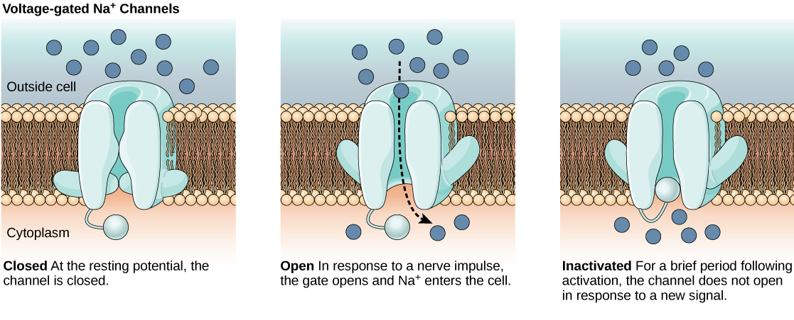
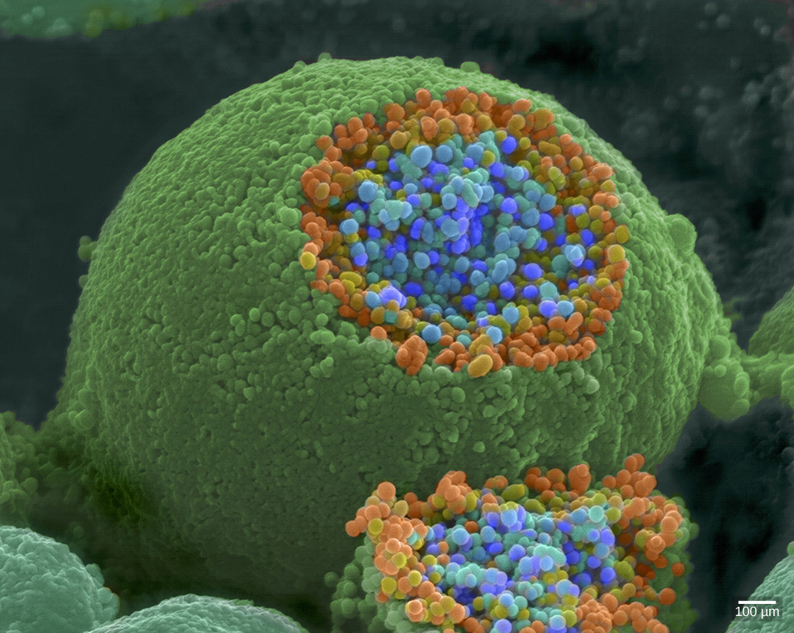
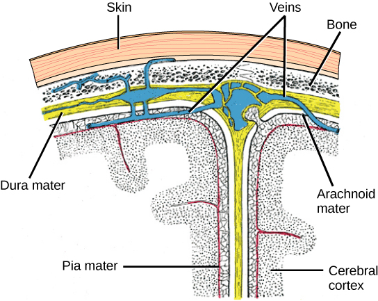
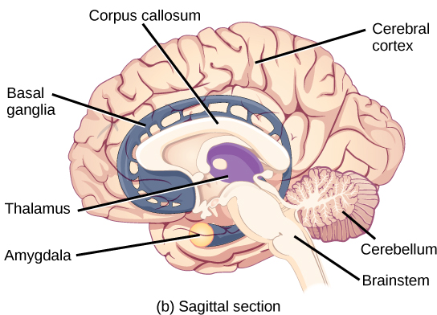
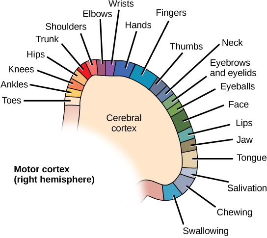
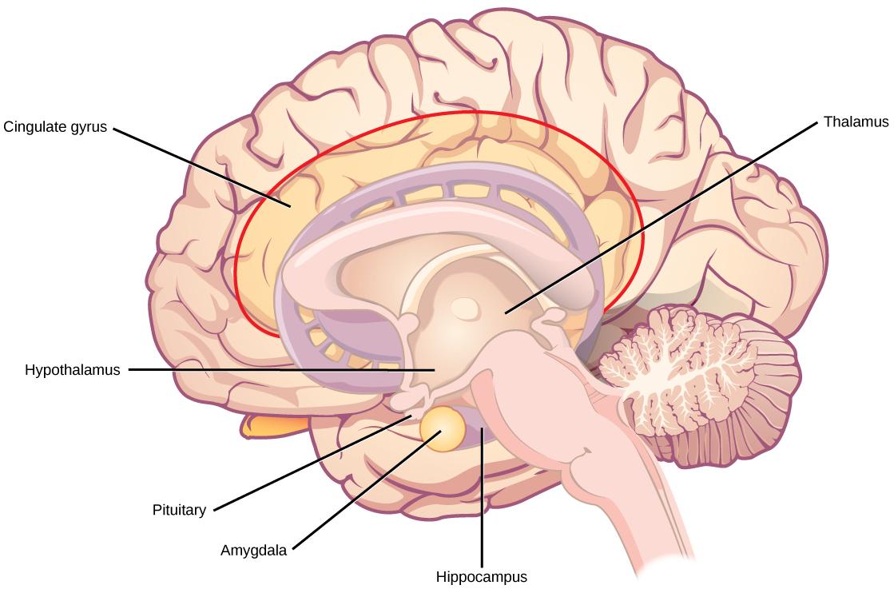
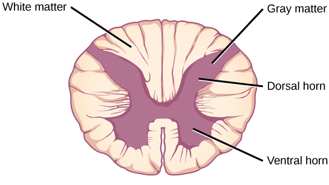

![Illustration shows a
neuron. The main part of the cell body, called the soma,
contains the nucleus. Branch-like dendrites project from three
sides of the soma. A long, thin axon projects from the fourth
side. The axon branches at the end. The tip of the axon is in
close proximity to dendrites of an adjacent nerve cell. The
narrow space between the axon and dendrites is called the
synapse. Cells called oligodendrocytes are located next to the
axon. Projections from the oligodendrocytes wrap around the
axon, forming a myelin sheath. The myelin sheath is not
continuous, and gaps where the axon is exposed are called nodes
of Ranvier.](m44747/Figure_35_01_02.png)
Figure 35.1.
An athlete’s nervous system is hard at work during the planning and execution of a movement as precise as a high jump. Parts of the nervous system are involved in determining how hard to push off and when to turn, as well as controlling the muscles throughout the body that make this complicated movement possible without knocking the bar down—all in just a few seconds. (credit: modification of work by Shane T. McCoy, U.S. Navy)
When you’re reading this book, your nervous system is performing several functions simultaneously. The visual system is processing what is seen on the page; the motor system controls the turn of the pages (or click of the mouse); the prefrontal cortex maintains attention. Even fundamental functions, like breathing and regulation of body temperature, are controlled by the nervous system. A nervous system is an organism’s control center: it processes sensory information from outside (and inside) the body and controls all behaviors—from eating to sleeping to finding a mate.
Vertebrate nervous systems are complex, centralized, and
specialized compared to other animal nervous systems (e.g.,
insects and other invertebrates) . While there is great diversity
among different vertebrate nervous systems, they all share a basic
structure: a central nervous system (CNS) that contains a brain
and spinal cord and a peripheral nervous system (PNS) made up of
peripheral sensory and motor nerves.
The nervous system is made up of neurons, specialized cells that can receive and transmit chemical or electrical signals, and glia, cells that provide support functions for the neurons. A neuron can be compared to an electrical wire—it transmits a signal from one place to another. Glia can be compared to the workers at the electric company who make sure wires go to the right places, maintain the wires, and take down wires that are broken. Although glia have been compared to workers, recent evidence suggests that also usurp some of the signaling functions of neurons.
There is great diversity in the types of neurons and glia that are present in different parts of the nervous system. All types of neurons share several important cellular components.
The nervous system of the common laboratory fly, Drosophila melanogaster, contains around 100,000 neurons, the same number as a lobster. This number compares to 75 million in the mouse and 300 million in the octopus. A human brain contains around 86 billion neurons. Despite these very different numbers, the nervous systems of these animals control many of the same behaviors—from basic reflexes to more complicated behaviors like finding food and courting mates. The ability of neurons to communicate with each other as well as with other types of cells underlies all of these behaviors.
Most neurons share the same cellular components. But neurons are also highly specialized—different types of neurons have different sizes and shapes that relate to their functional roles.
Like other cells, each neuron has a cell body (or soma) that contains a nucleus, mitochondria, and other cellular components (e.g., smooth and rough endoplasmic reticulum, Golgi apparatus). Neurons also contain unique structures, illustrated in Figure 35.3 for receiving and sending the electrical signals that make neuronal communication possible. Dendrites are tree-like structures that extend away from the cell body to receive messages from other neurons at specialized junctions called synapses. Although some neurons do not have any dendrites, some types of neurons have multiple dendrites. Dendrites can have small protrusions called dendritic spines, which further increase surface area for possible synaptic connections.
Once a signal is received by the dendrite, it then travels passively to the cell body. The cell body contains a specialized structure, the axon hillock that integrates signals from multiple synapses and serves as a junction between the cell body and an axon. An axon is a tube-like structure that propagates the integrated signal to specialized endings called axon terminals. These terminals in turn synapse on other neurons, muscle, or target organs. Chemicals released at axon terminals allow signals to be communicated to these other cells. Neurons usually have one or two axons, but some neurons, like amacrine cells in the retina, do not contain any axons. Some axons are covered with myelin, which acts as an insulator to minimize dissipation of the electrical signal as it travels down the axon, greatly increasing the speed on conduction. This insulation is important as the axon from a human motor neuron can be as long as a meter—from the base of the spine to the toes. The myelin sheath is not actually part of the neuron. Myelin is produced by glial cells. Along the axon there are periodic gaps in the myelin sheath. These gaps are called nodes of Ranvier and are sites where the signal is “recharged” as it travels along the axon.
It is important to note that a single neuron does not act alone—neuronal communication depends on the connections that neurons make with one another (as well as with other cells, like muscle cells). Dendrites from a single neuron may receive synaptic contact from many other neurons. For example, dendrites from a Purkinje cell in the cerebellum are thought to receive contact from as many as 200,000 other neurons.
Art Connection
Figure 35.3.
Neurons contain organelles common to many other cells, such as a nucleus and mitochondria. They also have more specialized structures, including dendrites and axons.
Which of the following statements is false?
The soma is the cell body of a nerve cell.
Myelin sheath provides an insulating layer to the dendrites.
Axons carry the signal from the soma to the target.
Dendrites carry the signal to the soma.
Glia
While glia are often thought of as the supporting cast of the
nervous system, the number of glial cells in the brain actually
outnumbers the number of neurons by a factor of ten. Neurons would
be unable to function without the vital roles that are fulfilled
by these glial cells. Glia guide developing neurons to their
destinations, buffer ions and chemicals that would otherwise harm
neurons, and provide myelin sheaths around axons. Scientists have
recently discovered that they also play a role in responding to
nerve activity and modulating communication between nerve cells.
When glia do not function properly, the result can be
disastrous—most brain tumors are caused by mutations in glia.
Questions to answer:
1. How are neurons similar to other cells? How are they unique?
2. Why are glial cells needed for proper function of the neurons
and the nervous system?
Functions performed by the nervous system—from a simple motor reflex to more advanced functions like making a memory or a decision—require neurons to communicate with one another. While humans use words and body language to communicate, neurons use electrical and chemical signals. Just like a person in a committee, one neuron usually receives and synthesizes messages from multiple other neurons before “making the decision” to send the message on to other neurons.
For the nervous system to function, neurons must be able to send and receive signals. These signals are possible because each neuron has a charged cellular membrane (a voltage difference between the inside and the outside), and the charge of this membrane can change in response to neurotransmitter molecules released from other neurons and environmental stimuli. To understand how neurons communicate, one must first understand the basis of the baseline or ‘resting’ membrane charge.
The lipid bilayer membrane that surrounds a neuron is impermeable to charged molecules or ions (Can you explain why?). To enter or exit the neuron, ions must pass through protein ion channels. Ion channels can have different configurations: open, closed, and inactive (Figure 35.9). Some ion channels need to be activated in order to allow ions to pass through the membrane. Ion channels are sensitive to the environment and can change their shape (open or close) accordingly. Voltage-gated ion channels change their structure in response to voltage changes. These channels regulate the relative concentrations of different ions inside and outside the cell and differences in concentrations establish a charge difference called the membrane potential.

Figure 35.9.
Voltage-gated ion channels open in response to changes in
membrane voltage. After activation, they become inactivated for a
brief period and will no longer open in response to a signal.
Questions to answer:
1. What is the difference between open,closed, and inactive ion
channels?
2. What determines the state of the ion channels in charged
membranes?
Link to Learning
This video
discusses the basis of the resting membrane potential.
A neuron at rest is negatively charged: the inside of a cell is approximately 70 millivolts more negative than the outside (−70 mV, note that this number varies by neuron type and by animal species). This voltage is called the resting membrane potential; it is caused by differences in the concentrations of ions inside and outside the cell. If the membrane were equally permeable to all ions, each type of ion would flow across the membrane and the system would reach equilibrium (can you explain why?). Because ions and other charged molecules cannot simply cross the membrane at will there are different concentrations of several charged molecules and ions inside and outside the cell (can you explain why?).
The actions of the sodium potassium pump help to maintain the
resting potential. The sodium potassium pumps brings two K+
ions into the cell while removing three Na+ ions per
ATP consumed. When the membrane is at rest, K+ ions
accumulate inside the cell and Na+ accumulate outside.
The negative charge within the cell is created by the cell
membrane being more permeable to potassium ion movement than
sodium ion movement. The cell possesses potassium and sodium
channels that allow the two cations to slowly leak (slowly
diffuse) down their concentration gradient. However, the neurons
have far more potassium leakage channels than sodium leakage
channels. Therefore, potassium diffuses out of the cell at a much
faster rate than sodium leaks in. Because more cations (+ charged
ions) are leaving the cell than are entering, this causes the
interior of the cell to be negatively charged relative to the
outside of the cell due to the fact that negatively charged
proteins and phosphates (also negatively charged) in the cytoplasm
are unable to leave the cell. As more cations are expelled from
the cell than taken in, the inside of the cell becomes
increasingly negatively charged relative to the extracellular
fluid. It should be noted that calcium ions (Cl–) tend
to accumulate outside of the cell because they are repelled by
negatively-charged proteins and phosphates within the cytoplasm
(Figure 35.10a)
![The resting membrane
potential of minus seventy volts is maintained by a
sodium/potassium transporter that transports sodium ions out of
the cell and potassium ions in. Voltage gated sodium and
potassium channels are closed. In response to a nerve impulse,
some sodium channels open, allowing sodium ions to enter the
cell. The membrane starts to depolarize; in other words, the
charge across the membrane lessens. If the membrane potential
increases to the threshold of excitation, all the sodium
channels open. At the peak action potential, potassium channels
open and potassium ions leave the cell. The membrane eventually
becomes hyperpolarized.](m44748/Figure_35_02_02.jpg)
Figure 35.10.
The (a) resting membrane potential is a result of different concentrations of Na+ and K+ ions inside and outside the cell. A nerve impulse causes Na+ to enter the cell, resulting in (b) depolarization. At the peak action potential, K+ channels open and the cell becomes (c) hyperpolarized.
A neuron can receive input from other neurons and, if this input is strong enough, send the signal to downstream neurons. Transmission of a signal between neurons is generally carried by a chemical called a neurotransmitter (more later). Transmission of a signal within a neuron (from dendrite to axon terminal) is carried by a brief reversal of the resting membrane potential called an action potential. When neurotransmitter molecules bind to receptors located on a neuron’s dendrites, ion channels open. This opening allows positive ions to enter the neuron and results in depolarization of the membrane—a decrease in the difference in voltage between the inside and outside of the neuron. A stimulus from a sensory cell or another neuron depolarizes the target neuron to its threshold potential (-55 mV). Na+ channels in the axon hillock open, allowing positive ions to enter the cell (Figure 35.10 and Figure 35.11). Once the sodium channels are completely open, the neuron completely depolarizes to a membrane potential of about +40 mV. Action potentials are considered an “all-or nothing” event, in that, once the threshold potential is reached, the neuron always completely depolarizes. Once depolarization is complete, the cell must now “reset” its membrane voltage back to the resting potential. To accomplish this, the Na+ channels close and cannot be opened. This begins the neuron’s refractory period, in which it cannot produce another action potential because its sodium channels will not open. At the same time, voltage-gated K+ channels open, allowing K+ to leave the cell. As K+ ions leave the cell, the membrane potential once again becomes negative . The diffusion of K+ out of the cell actually hyperpolarizes the cell, in that the membrane potential becomes more negative than the cell’s normal resting potential. At this point, the sodium channels will return to their resting state, meaning they are ready to open again if the membrane potential again exceeds the threshold potential. In the absence of further neuronal stimulation, the sodium/potassium pump will move Na+ out and K+ in restoring concentration (high Na+ outside and high K+ inside) of the ions prior to the the action potential. Action potentials have a constant amplitude. Neurons thus encode and transmit information primarily through the frequency and patterns of action potentials, not in terms of action potential size .
Art Connection
![Graph plots membrane
potential in millivolts versus time. The membrane remains at the
resting potential of -70 millivolts until a nerve impulse occurs
in step 1. Some sodium channels open, and the potential begins
to rapidly climb past the threshold of excitation of -55
millivolts, at which point all the sodium channels open. At the
peak action potential, the potential begins to rapidly drop as
potassium channels open and sodium channels close. As a result,
the membrane repolarizes past the resting membrane potential and
becomes hyperpolarized. The membrane potential then gradually
returns to normal.](m44748/Figure_35_02_03.png)
Figure 35.11.
The formation of an action potential can be divided into five steps: (1) A stimulus from a sensory cell or another neuron causes the target cell to depolarize toward the threshold potential. (2) If the threshold of excitation is reached, all Na+ channels open and the membrane depolarizes. (3) At the peak action potential, K+ channels open and K+ begins to leave the cell. At the same time, Na+ channels close. (4) The membrane becomes hyperpolarized as K+ ions continue to leave the cell. The hyperpolarized membrane is in a refractory period and cannot fire. (5) The K+ channels close and the Na+/K+ transporter restores the resting potential.

Figure 35.12.
The action potential is conducted down the axon as the axon
membrane depolarizes, then repolarizes.
Questions to answer:
1. Why/how does the cell membrane become depolarized?
2. Why/how does the cell membrane become hyperpolarized?
3. How is repolarization achieved? Why is this necessary?
4. Do action potentials have to travel in one direction?
5. Where does the energy come from to drive action potentials?
6. Potassium channel blockers, such as amiodarone and
procainamide, which are used to treat abnormal electrical activity
in the heart, called cardiac dysrhythmia, impede the movement of
K+ through voltage-gated K+ channels. Which part of the action
potential would you expect potassium channels to affect?
Link to Learning
This video presents an overview of action potential.
For an action potential to communicate information to another neuron, it must travel along the axon and reach the axon terminals where it can initiate neurotransmitter release. The speed of conduction of an action potential along an axon is influenced by both the diameter of the axon and the axon’s resistance to current leak. Myelin acts as an insulator that prevents current from leaving the axon; this increases the speed of action potential conduction. In demyelinating diseases like multiple sclerosis, action potential conduction slows because current leaks from previously insulated axon areas. The nodes of Ranvier, illustrated in Figure 35.13 are gaps in the myelin sheath along the axon. These unmyelinated spaces are about one micrometer long and contain voltage gated Na+ and K+ channels. Flow of ions through these channels, particularly the Na+ channels, regenerates the action potential over and over again along the axon. This ‘jumping’ of the action potential from one node to the next is called saltatory conduction. If nodes of Ranvier were not present along an axon, the action potential would propagate very slowly since Na+ and K+ channels would have to continuously regenerate action potentials at every point along the axon instead of at specific points. Nodes of Ranvier also save energy for the neuron since the channels only need to be present at the nodes and not along the entire axon.
![Illustration shows an
axon covered in three bands of myelin sheath. Between the sheath
coverings the axon is exposed. The uncovered parts of the axon
are called nodes of Ranvier. In the illustration, the left node
of Ranvier is depolarized such that the membrane potential is
positive inside and negative outside. The right membrane of the
right node is at the resting potential, negative inside and
positive outside. An arrow indicates that the depolarization
jumps from the left node to the right, so that the right node
becomes depolarized.](m44748/Figure_35_02_05.jpg)
Figure 35.13.
Nodes of Ranvier are gaps in myelin coverage along axons. Nodes
contain voltage-gated K+ and Na+ channels.
Action potentials travel down the axon by jumping from one node to
the next.
Questions to answer:
1. Multiple sclerosis causes demyelination of axons in the brain
and spinal cord. Why is this problematic?
2. How does myelin aid propagation of an action potential along an
axon? How do the nodes of Ranvier help this process?
The synapse or “gap” is the place where information is transmitted from one neuron to another. Synapses usually form between axon terminals and dendritic spines, but this is not universally true. There are also axon-to-axon, dendrite-to-dendrite, and axon-to-cell body synapses. The neuron transmitting the signal is called the presynaptic neuron, and the neuron receiving the signal is called the postsynaptic neuron. Note that these designations are relative to a particular synapse—most neurons are both presynaptic and postsynaptic. There are two types of synapses: chemical and electrical.
When an action potential reaches the axon terminal it depolarizes the membrane and opens voltage-gated Na+ channels. Na+ ions enter the cell, further depolarizing the presynaptic membrane. This depolarization causes voltage-gated Ca2+ channels to open. Calcium ions entering the cell initiate a signaling cascade that causes small membrane-bound vesicles, called synaptic vesicles, containing neurotransmitter molecules to fuse with the presynaptic membrane. Synaptic vesicles are shown in Figure 35.14, which is an image from a scanning electron microscope.

Figure 35.14.
This pseudocolored image taken with a scanning electron microscope shows an axon terminal that was broken open to reveal synaptic vesicles (blue and orange) inside the neuron. (credit: modification of work by Tina Carvalho, NIH-NIGMS; scale-bar data from Matt Russell)
Fusion of a vesicle with the presynaptic membrane causes neurotransmitter to be released into the synaptic cleft, the extracellular space between the presynaptic and postsynaptic membranes, as illustrated in Figure 35.15. The neurotransmitter diffuses across the synaptic cleft and binds to receptor proteins on the postsynaptic membrane.
![Illustration shows a
narrow axon of a presynaptic cell widening into a bulb-like axon
terminal. A narrow synaptic cleft separates the axon terminal of
the presynaptic cell from the postsynaptic cell. In step 1, an
action potential arrives at the axon terminal. In step 2, the
action potential causes voltage-gated calcium channels in the
axon terminal open, allowing calcium to enter. In step 3,
calcium influx causes neurotransmitter-containing synaptic
vesicles to fuse with the plasma membrane. Contents of the
vesicles are released into the synaptic cleft by exocytosis. In
step 4, neurotransmitter diffuses across the synaptic cleft and
binds ligand-gated ion channels on the postsynaptic membrane,
causing the channels to open. In step 5, the open channels cause
ion movement into or out of the cell, resulting in a localized
change in membrane potential. In step 6, reuptake by the
presynaptic neuron, enzymatic degradation and diffusion reduce
neurotransmitter levels, terminating the signal.](m44748/Figure_35_02_07.jpg)
Figure 35.15.
Communication at chemical synapses requires release of neurotransmitters. When the presynaptic membrane is depolarized, voltage-gated Ca2+ channels open and allow Ca2+ to enter the cell. The calcium entry causes synaptic vesicles to fuse with the membrane and release neurotransmitter molecules into the synaptic cleft. The neurotransmitter diffuses across the synaptic cleft and binds to ligand-gated ion channels in the postsynaptic membrane, resulting in a localized depolarization or hyperpolarization of the postsynaptic neuron.
The binding of a specific neurotransmitter causes particular ion channels, in this case ligand-gated channels, on the postsynaptic membrane to open. Neurotransmitters can either have excitatory or inhibitory effects on the postsynaptic membrane, as detailed in Table 35.1. For example, when acetylcholine is released at the synapse between a nerve and muscle (called the neuromuscular junction) by a presynaptic neuron, it causes postsynaptic Na+ channels to open. Na+ enters the postsynaptic cell and causes the postsynaptic membrane to depolarize. This depolarization is called an excitatory postsynaptic potential (EPSP) and makes the postsynaptic neuron more likely to fire an action potential. Release of neurotransmitter at inhibitory synapses causes inhibitory postsynaptic potentials (IPSPs), a hyperpolarization of the presynaptic membrane. For example, when the neurotransmitter GABA (gamma-aminobutyric acid) is released from a presynaptic neuron, it binds to and opens Cl- channels. Cl- ions enter the cell and hyperpolarizes the membrane, making the neuron less likely to fire an action potential.
Once neurotransmission has occurred, the neurotransmitter must be removed from the synaptic cleft so the postsynaptic membrane can “reset” and be ready to receive another signal. This can be accomplished in three ways: the neurotransmitter can diffuse away from the synaptic cleft, it can be degraded by enzymes in the synaptic cleft, or it can be recycled (sometimes called reuptake) by the presynaptic neuron. Several drugs act at this step of neurotransmission. For example, some drugs that are given to Alzheimer’s patients work by inhibiting acetylcholinesterase, the enzyme that degrades acetylcholine. This inhibition of the enzyme essentially increases neurotransmission at synapses that release acetylcholine. Once released, the acetylcholine stays in the cleft and can continually bind and unbind to postsynaptic receptors.
While electrical synapses are fewer in number than chemical synapses, they are found in all nervous systems and play important and unique roles. The mode of neurotransmission in electrical synapses is quite different from that in chemical synapses. In an electrical synapse, the presynaptic and postsynaptic membranes are very close together and are actually physically connected by channel proteins forming gap junctions. Gap junctions allow current to pass directly from one cell to the next. In addition to the ions that carry this current, other molecules, such as ATP, can diffuse through the large gap junction pores.
There are key differences between chemical and electrical synapses. Because chemical synapses depend on the release of neurotransmitter molecules from synaptic vesicles to pass on their signal, there is an approximately one millisecond delay between when the axon potential reaches the presynaptic terminal and when the neurotransmitter leads to opening of postsynaptic ion channels. Additionally, this signaling is unidirectional. Signaling in electrical synapses, in contrast, is virtually instantaneous (which is important for synapses involved in key reflexes), and some electrical synapses are bidirectional. Electrical synapses are also more reliable as they are less likely to be blocked, and they are important for synchronizing the electrical activity of a group of neurons. For example, electrical synapses in the thalamus are thought to regulate slow-wave sleep, and disruption of these synapses can cause seizures.
Sometimes a single EPSP is strong enough to induce an action potential in the postsynaptic neuron, but often multiple presynaptic inputs must create EPSPs around the same time for the postsynaptic neuron to be sufficiently depolarized to fire an action potential. This process is called summation and occurs at the axon hillock, as illustrated in Figure 35.16. Additionally, one neuron often has inputs from many presynaptic neurons—some excitatory and some inhibitory—so IPSPs can cancel out EPSPs and vice versa. It is the net change in postsynaptic membrane voltage that determines whether the postsynaptic cell has reached its threshold of excitation needed to fire an action potential. Together, synaptic summation and the threshold for excitation act as a filter so that random “noise” in the system is not transmitted as important information.
![Illustration shows the
location of the axon hillock, which is the area connecting the
neuron body to the axon. A graph shows the summation of membrane
potentials at the axon hillock, plotted as membrane potential in
millivolts versus time. Initially, the membrane potential at the
axon hillock is -70 millivolts. A series of EPSPs and IPSPs
cause the potential to rise and fall. Eventually, the potential
increases to the threshold of excitation. At this point the
nerve fires, resulting in a sharp increase in membrane
potential, followed by a rapid decrease. The hillock becomes
hyperpolarizes such that the membrane potential is lower than
the resting potential. The hillock then gradually returns to the
resting potential.](m44748/Figure_35_02_08.jpg)
Figure 35.16.
A single neuron can receive both excitatory and inhibitory inputs from multiple neurons, resulting in local membrane depolarization (EPSP input) and hyperpolarization (IPSP input). All these inputs are added together at the axon hillock. If the EPSPs are strong enough to overcome the IPSPs and reach the threshold of excitation, the neuron will fire.
Link to Learning
Watch this
video in which a paralyzed woman use a brain-controlled
robotic arm to bring a drink to her mouth, among other images of
brain-computer interface technology in action.
Question to answer:
2. What are the main steps in chemical neurotransmission?
3. Once neurotransmission has occurred, how are postsynaptic
membranes “reset”? Why is this critical to the functions of the
nervous system?
4. How (do you think) are IPSPs achieved? What about EPSPs
5. How (do you think) synaptic summation and the threshold for
excitation act to filter random “noise” from the system?
The central nervous system (CNS) is made up of the brain and spinal cord and is covered with three layers of protective coverings called meninges (“meninges” is derived from the Greek and means “membranes”) (Figure 16.21). The outermost layer is the dura mater, the middle layer is the web-like arachnoid mater, and the inner layer is the pia mater, which directly contacts and covers the brain and spinal cord. The space between the arachnoid and pia maters is filled with cerebrospinal fluid (CSF). The brain floats in CSF, which acts as a cushion and shock absorber.

Figure 35.19.
The cerebral cortex is covered by three layers of meninges: the dura, arachnoid, and pia maters. (credit: modification of work by Gray’s Anatomy)
The brain is the part of the central nervous system that is contained in the cranial cavity of the skull. It includes the cerebral cortex, limbic system, basal ganglia, thalamus, hypothalamus, cerebellum, brainstem, and retinas. The outermost part of the brain is a thick piece of nervous system tissue called the cerebral cortex. The cerebral cortex, limbic system, and basal ganglia make up the two cerebral hemispheres. A thick fiber bundle called the corpus callosum (corpus = “body”; callosum = “tough”) connects the two hemispheres. Although there are some brain functions that are localized more to one hemisphere than the other, the functions of the two hemispheres are largely redundant. In fact, sometimes (very rarely) an entire hemisphere is removed to treat severe epilepsy. While patients do suffer some deficits following the surgery, they can have surprisingly few problems, especially when the surgery is performed on children who have very immature nervous systems.
In other surgeries to treat severe epilepsy, the corpus callosum is cut instead of removing an entire hemisphere. This causes a condition called split-brain, which gives insights into unique functions of the two hemispheres. For example, when an object is presented to patients’ left visual field, they may be unable to verbally name the object (and may claim to not have seen an object at all). This is because the visual input from the left visual field crosses and enters the right hemisphere and cannot then signal to the speech center, which generally is found in the left side of the brain. Remarkably, if a split-brain patient is asked to pick up a specific object out of a group of objects with the left hand, the patient will be able to do so but will still be unable to verbally identify it.
![Illustration shows
coronal (front) and sagittal (side) sections of a human brain.
In the coronal section, the large upper part of the brain,
called the cerebral cortex, is divided into left and right
hemispheres. A cavity resembling butterfly wings exists between
the left and right cortex. The corpus callosum is a band that
connects the two hemispheres together, just above this cavity.
The surface of the cerebral cortex contains bumpy protrusions
called gyri. The cerebral cortex is anchored by the brain stem,
which connects with the spinal cord. On either side of the
brainstem tucked beneath the cerebral cortex is the cerebellum.
The surface of the cerebellum is bumpy, but not as bumpy as the
cerebral cortex. The sagittal section reveals that the cerebral
cortex makes up the front and top part of the brain, while the
brainstem and cerebellum make up the lower back part. The oval
thalamus sits in the cavity in the middle of the cerebral
cortex. The corpus callosum wraps around the top part thalamus.
The basal ganglia wraps around the corpus callosum, starting at
the lower front part of the brain and continuing three-quarters
of the way around so the back end almost meets the front end.
The basal ganglia is separated into segments that are connected
along the top and bottom. The amygdala is a spherical structure
at the end of the basal ganglia.](m44749/Figure_35_03_02a.jpg)

(a)
(b)
Figure 35.20.
These illustrations show the (a) coronal and (b) sagittal sections of the human brain.
In other surgeries to treat severe epilepsy, the corpus callosum is cut instead of removing an entire hemisphere. This causes a condition called split-brain, which gives insights into unique functions of the two hemispheres. For example, when an object is presented to patients’ left visual field, they may be unable to verbally name the object (and may claim to not have seen an object at all). This is because the visual input from the left visual field crosses and enters the right hemisphere and cannot then signal to the speech center, which generally is found in the left side of the brain. Remarkably, if a split-brain patient is asked to pick up a specific object out of a group of objects with the left hand, the patient will be able to do so but will still be unable to vocally identify it.
Link to Learning
See this website to learn more about split-brain patients and to play a game where you can model the split-brain experiments yourself.
Each hemisphere contains regions called lobes that are involved in different functions. Each hemisphere of the mammalian cerebral cortex can be broken down into four functionally and spatially defined lobes: frontal, parietal, temporal, and occipital Figure 35.21 illustrates these four lobes of the human cerebral cortex.
![Sagittal, or side view
of the human brain shows the different lobes of the cerebral
cortex. The frontal lobe is at the front center of the brain.
The parietal lobe is at the top back part of the brain. The
occipital lobe is at the back of the brain, and the temporal
lobe is at the bottom center of the brain. The motor cortex is
the back of the frontal lobe, and the olfactory bulb is the
bottom part. The somatosensory cortex is the front part of the
parietal lobe. The brainstem is beneath the temporal lobe, and
the cerebellum is beneath the occipital lobe.](m44749/Figure_35_03_03.png)
Figure 35.21.
The human cerebral cortex includes the frontal, parietal, temporal, and occipital lobes.
The frontal lobe is located at the front of the brain, over the eyes. This lobe contains the olfactory bulb, which processes smells. The frontal lobe also contains the motor cortex, which is important for planning and implementing movement. Areas within the motor cortex map to different muscle groups. Neurons in the frontal lobe also control cognitive functions like maintaining attention, speech, and decision-making. Studies of humans who have damaged their frontal lobes show that parts of this area are involved in personality, socialization, and assessing risk.

Figure 35.22.
Different parts of the motor cortex control different muscle groups. Muscle groups that are neighbors in the body are generally controlled by neighboring regions of the motor cortex as well. For example, the neurons that control finger movement are near the neurons that control hand movement.
The parietal lobe is located at the top of the brain. Neurons in the parietal lobe are involved in speech and also reading. Two of the parietal lobe’s main functions are processing somatosensation—touch sensations like pressure, pain, heat, cold—and processing proprioception—the sense of how parts of the body are oriented in space. The parietal lobe contains a somatosensory map of the body similar to the motor cortex. The occipital lobe is located at the back of the brain. It is primarily involved in vision—seeing, recognizing, and identifying the visual world. The temporal lobe is located at the base of the brain and is primarily involved in processing and interpreting sounds. It also contains the hippocampus (named from the Greek for “seahorse,” which it resembles in shape) a structure that processes memory formation. The role of the hippocampus in memory was partially determined by studying one famous epileptic patient, HM, who had both sides of his hippocampus removed in an attempt to cure his epilepsy. His seizures went away, but he could no longer form new memories (although he could remember some facts from before his surgery and could learn new motor tasks).
Interconnected brain areas called the basal ganglia play important roles in movement control and posture. The basal ganglia also regulate motivation.
The thalamus acts as a gateway to and from the cortex. It receives sensory and motor inputs from the body and also receives feedback from the cortex. This feedback mechanism can modulate conscious awareness of sensory and motor inputs depending on the attention and arousal state of the animal. The thalamus helps regulate consciousness, arousal, and sleep states.

Figure 35.24.
The limbic system regulates emotion and other behaviors. It includes parts of the cerebral cortex located near the center of the brain, including the cingulate gyrus and the hippocampus as well as the thalamus, hypothalamus and amygdala.
Below the thalamus is the hypothalamus. The hypothalamus controls the endocrine system by sending signals to the pituitary gland. Among other functions, the hypothalamus is the body’s thermostat—it makes sure the body temperature is kept at appropriate levels. Neurons within the hypothalamus also regulate circadian rhythms, sometimes called sleep cycles.
The limbic system is a connected set of structures that regulates emotion, as well as behaviors related to fear and motivation. It plays a role in memory formation and includes parts of the thalamus and hypothalamus as well as the hippocampus. One important structure within the limbic system is a temporal lobe structure called the amygdala. The two amygdala (one on each side) are important both for the sensation of fear and for recognizing fearful faces.
The cerebellum (cerebellum = “little brain”) sits at the base of the brain on top of the brainstem. The cerebellum controls balance and aids in coordinating movement and learning new motor tasks. The cerebellum of birds is large compared to other vertebrates because of the coordination required by flight.
The brainstem connects the rest of the brain with the spinal cord and regulates some of the most important and basic functions of the nervous system including breathing, swallowing, digestion, sleeping, walking, and sensory and motor information integration.
Connecting to the brainstem and extending down the body through the spinal column is the spinal cord. The spinal cord is a thick bundle of nerve tissue that carries information about the body to the brain and from the brain to the body. The spinal cord is contained within the meninges and the bones of the vertebral column but is able to communicate signals to and from the body through its connections with spinal nerves (part of the peripheral nervous system). A cross-section of the spinal cord looks like a white oval containing a gray butterfly-shape (Figure 35.25). Axons make up the “white matter” and neuron and glia cell bodies (and interneurons) make up the “gray matter.” Axons and cell bodies in the dorsa spinal cord convey mostly sensory information from the body to the brain. Axons and cell bodies in the spinal cord primarily transmit signals controlling movement from the brain to the body.
The spinal cord also controls motor reflexes. These reflexes are quick, unconscious movements—like automatically removing a hand from a hot object. Reflexes are so fast because they involve local synaptic connections. For example, the knee reflex that a doctor tests during a routine physical is controlled by a single synapse between a sensory neuron and a motor neuron. While a reflex may only require the involvement of one or two synapses, synapses with interneurons in the spinal column transmit information to the brain to convey what happened (the knee jerked, or the hand was hot).

Figure 35.25.
A cross-section of the spinal cord shows gray matter (containing cell bodies and interneurons) and white matter (containing axons).
The peripheral nervous system (PNS) is the connection between the central nervous system and the rest of the body. The PNS can be broken down into the autonomic nervous system, which controls bodily functions without conscious control, and the sensory-somatic nervous system, which transmits sensory information from the skin, muscles, and sensory organs to the CNS and sends motor commands from the CNS to the muscles.
![The autonomic nervous
system is divided into sympathetic and parasympathetic systems.
In the sympathetic system, the soma of the preganglionic neurons
is usually located in the spine while in the parasympathetic
system the soma is usually in the brainstem or sacral, at the
bottom of the spine. In both systems, the preganglionic neuron
releases the neurotransmitter acetylcholine into the synapse.
Postganglionic neurons of the sympathetic system have somas in a
sympathetic ganglion, located next to the spinal cord.
Postganglionic neurons of the parasympathetic system have somas
in ganglions near the target organ. Postganglionic neurons of
the sympathetic system release norepinephrine into the synapse,
while postganglionic neurons of the parasympathetic system
release acetylcholine or nitric oxide.](m44751/Figure_35_04_01f.png)
Figure 35.26.
In the autonomic nervous system, a preganglionic neuron of the CNS synapses with a postganglionic neuron of the PNS. The postganglionic neuron, in turn, acts on a target organ. Autonomic responses are mediated by the sympathetic and the parasympathetic systems, which are antagonistic to one another. The sympathetic system activates the “fight or flight” response, while the parasympathetic system activates the “rest and digest” response.
Which of the following statements is false?
The parasympathetic pathway is responsible for resting the body, while the sympathetic pathway is responsible for preparing for an emergency.
Most preganglionic neurons in the sympathetic pathway originate in the spinal cord.
Slowing of the heartbeat is a parasympathetic response.
Parasympathetic neurons are responsible for releasing norepinephrine on the target organ, while sympathetic neurons are responsible for releasing acetylcholine.
The autonomic nervous system serves as the relay between the CNS and the internal organs. It controls the lungs, the heart, smooth muscle, and exocrine and endocrine glands. The autonomic nervous system controls these organs largely without conscious control; it can continuously monitor the conditions of these different systems and implement changes as needed. Signaling to the target tissue usually involves two synapses: a preganglionic neuron (originating in the CNS) synapses to a neuron in a ganglion that, in turn, synapses on the target organ (Figure 35.27). There are two divisions of the autonomic nervous system that often have opposing effects: the sympathetic nervous system and the parasympathetic nervous system.
The sympathetic nervous system is responsible for the immediate responses an animal makes when it encounters a dangerous situation. One way to remember this is to think of the “fight-or-flight” response a person feels when encountering a snake (“snake” and “sympathetic” both begin with “s”). Examples of functions controlled by the sympathetic nervous system include an accelerated heart rate and inhibited digestion. These functions help prepare an organism’s body for the physical strain required to escape a potentially dangerous situation or to fend off a predator.
![Illustration shows the
effects of the sympathetic and parasympathetic systems on target
organs, and the placement of the preganglionic neurons that
mediate these effects. The parasympathetic system causes pupils
and bronchi to constrict, slows the heart rate, and stimulates
salivation, digestion, and bile secretion. Preganglionic neurons
that mediate these effects are all located in the brain stem.
Preganglionic neurons of the parasympathetic system that are
located in the sacral cause the bladder to contract. The
sympathetic system causes pupils and bronchi to dilate,
increases heart rate, inhibits digestion, stimulates the
breakdown of glycogen and the secretion of adrenaline and
noradrenaline, and inhibits contraction of the bladder. The
preganglionic neurons that mediate these effects are all located
in the spine.](m44751/Figure_35_04_02.jpg)
Figure 35.27.
The sympathetic and parasympathetic nervous systems often have opposing effects on target organs.
While the sympathetic nervous system is activated in stressful situations, the parasympathetic nervous system allows an animal to “rest and digest.” One way to remember this is to think that during a restful situation like a picnic, the parasympathetic nervous system is in control (“picnic” and “parasympathetic” both start with “p”). Parasympathetic preganglionic neurons have cell bodies located in the brainstem and in the sacral (toward the bottom) spinal cord (Figure 16.25). The parasympathetic nervous system resets organ function after the sympathetic nervous system is activated including slowing of heart rate, lowered blood pressure, and stimulation of digestion.
The sensory-somatic nervous system is made up of cranial and spinal nerves and contains both sensory and motor neurons. Sensory neurons transmit sensory information from the skin, skeletal muscle, and sensory organs to the CNS. Motor neurons transmit messages about desired movement from the CNS to the muscles to make them contract. Without its sensory-somatic nervous system, an animal would be unable to process any information about its environment (what it sees, feels, hears, and so on) and could not control motor movements. Unlike the autonomic nervous system, which usually has two synapses between the CNS and the target organ, sensory and motor neurons usually have only one synapse—one ending of the neuron is at the organ and the other directly contacts a CNS neuron.
Questions to answer:
1. What methods can be used to determine the function of a
particular brain region?
2. What are the main functions of the spinal cord?
3. What are the main differences between the sympathetic and
parasympathetic branches of the autonomic nervous system?
4. Speculate on the actions of neurotoxins and poisons and how
these molecules might interfere with the function(s) of neurons
and the nervous system.
5. Why do you think surgeries to treat brain and nervous system
disorders have surprisingly few problems, especially when the
surgery is performed on children who have very immature nervous
systems?
6. Why do you think there is a difference in the number of
synapses in neurons of the autonomic and sensory-somatic (sensory
and motor neurons) nervous systems?
neurodegenerative disorder characterized by problems with memory and thinking
neurotransmitter released by neurons in the central nervous system and peripheral nervous system
self-propagating momentary change in the electrical potential of a neuron (or muscle) membrane
structure within the limbic system that processes fear
spiderweb-like middle layer of the meninges that cover the central nervous system
glial cell in the central nervous system that provide nutrients, extracellular buffering, and structural support for neurons; also makes up the blood-brain barrier
neurodevelopmental disorder characterized by difficulty maintaining attention and controlling impulses
neurodevelopmental disorder characterized by impaired social interaction and communication abilities
part of the peripheral nervous system that controls bodily functions
electrically sensitive structure on the cell body of a neuron that integrates signals from multiple neuronal connections
structure on the end of an axon that can form a synapse with another neuron
tube-like structure that propagates a signal from a neuron’s cell body to axon terminals
interconnected collections of cells in the brain that are involved in movement and motivation; also known as basal nuclei
see basal ganglia
portion of the brain that connects with the spinal cord; controls basic nervous system functions like breathing, heart rate, and swallowing
brain structure involved in posture, motor coordination, and learning new motor actions
outermost sheet of brain tissue; involved in many higher-order functions
clear liquid that surrounds the brain and spinal cord and fills the ventricles and central canal; acts as a shock absorber and circulates material throughout the brain and spinal cord.
spongy tissue within ventricles that produces cerebrospinal fluid
helps regulate emotions and pain; thought to directly drive the body’s conscious response to unpleasant experiences
thick fiber bundle that connects the cerebral hemispheres
sensory and/or motor nerve that emanates from the brain
structure that extends away from the cell body to receive messages from other neurons
change in the membrane potential to a less negative value
tough outermost layer that covers the central nervous system
cell that lines fluid-filled ventricles of the brain and the central canal of the spinal cord; involved in production of cerebrospinal fluid
neurological disorder characterized by recurrent seizures
depolarization of a postsynaptic membrane caused by neurotransmitter molecules released from a presynaptic cell
part of the cerebral cortex that contains the motor cortex and areas involved in planning, attention, and language
(also, glial cells) cells that provide support functions for neurons
(plural: gyri) ridged protrusions in the cortex
brain structure in the temporal lobe involved in processing memories
change in the membrane potential to a more negative value
brain structure that controls hormone release and body homeostasis
hyperpolarization of a postsynaptic membrane caused by neurotransmitter molecules released from a presynaptic cell
connected brain areas that process emotion and motivation
prolonged decrease in synaptic coupling between a pre- and postsynaptic cell
prolonged increase in synaptic coupling between a pre-and postsynaptic cell
mental illness characterized by prolonged periods of sadness
difference in electrical potential between the inside and outside of a cell
membrane that covers and protects the central nervous system
glia that scavenge and degrade dead cells and protect the brain from invading microorganisms
fatty substance produced by glia that insulates axons
nervous system disorder characterized by the progressive loss of neurological functioning, usually caused by neuron death
specialized cell that can receive and transmit electrical and chemical signals
gaps in the myelin sheath where the signal is recharged
neurotransmitter and hormone released by activation of the sympathetic nervous system
part of the cerebral cortex that contains visual cortex and processes visual stimuli
glial cell that myelinates central nervous system neuron axons
neurodegenerative disorder that affects the control of movement
division of autonomic nervous system that regulates visceral functions during rest and digestion
part of the cerebral cortex involved in processing touch and the sense of the body in space
thin membrane layer directly covering the brain and spinal cord
sense about how parts of the body are oriented in space
glia that serve as scaffolds for developing neurons as they migrate to their final destinations
period after an action potential when it is more difficult or impossible for an action potential to be fired; caused by inactivation of sodium channels and activation of additional potassium channels of the membrane
glial cell that creates myelin sheath around a peripheral nervous system neuron axon
“jumping” of an action potential along an axon from one node of Ranvier to the next
glial cell that provides nutrients and structural support for neurons in the peripheral nervous system
mental disorder characterized by the inability to accurately perceive reality; patients often have difficulty thinking clearly and can suffer from delusions
system of sensory and motor nerves
sense of touch
thick fiber bundle that connects the brain with peripheral nerves; transmits sensory and motor information; contains neurons that control motor reflexes
nerve projecting between skin or muscle and spinal cord
(plural: sulci) indents or “valleys” in the cortex
process of multiple presynaptic inputs creating EPSPs around the same time for the postsynaptic neuron to be sufficiently depolarized to fire an action potential
division of autonomic nervous system activated during stressful “fight or flight” situations
junction between two neurons where neuronal signals are communicated
space between the presynaptic and postsynaptic membranes
spherical structure that contains a neurotransmitter
part of the cerebral cortex that processes auditory input; parts of the temporal lobe are involved in speech, memory, and emotion processing
brain area that relays sensory information to the cortex
level of depolarization needed for an action potential to fire
cavity within brain that contains cerebrospinal fluid